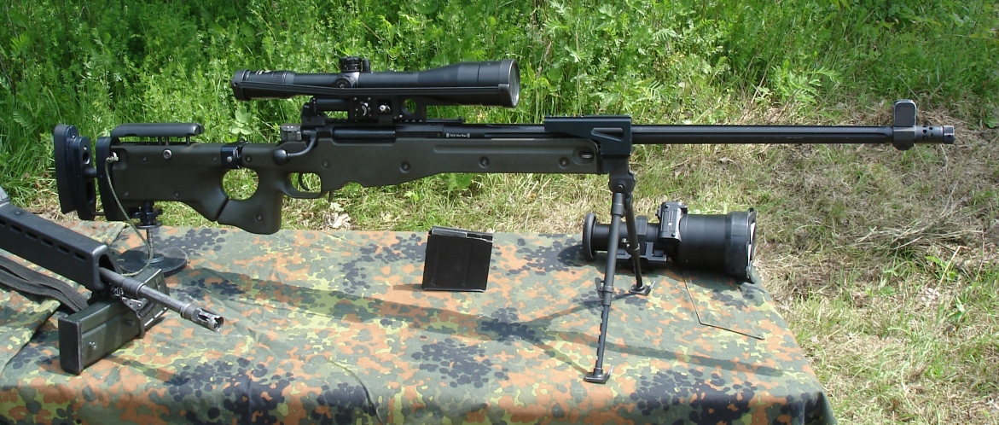

AWM狙擊步槍

精密國際AWM（Accuracy International Arctic Warfare Magnum）為英國精密國際研發的北極作戰系列的狙擊步槍，另稱AWSM（Accuracy International Arctic Warfare Super Magnum），AWSM較常指搭載著.338 Lapua Magnum的AWM。
- AWM中的“M”是Magnum的縮寫，也被稱為“超級馬格南”（Super Magnum），或簡稱SM步槍。AWM的不鏽鋼槍管外表面刻有縱向凹槽，此外這也能加大外表面，更有利於散熱，在射彈較多時不會出現彈著點偏移。扳機扣力為3.3磅（1.5kg）至4磅（1.8kg）之間可調。
AWM的口徑為北約成員國內所使用的.300溫徹斯特-馬格南和.338拉普-馬格南，此外還有一種7mm雷明頓-馬格南。在1997年推出的“AWM”步槍是以AW為基礎用最小的變化來適應大容量彈殼的槍彈。由於馬格南彈發射的衝量較大，因此在AWM的機頭上有6個閉鎖凸筍，分兩圈前後排列，每圈3個。
由於彈殼的直徑較原來的7.62×51mm彈大，為不改變彈匣寬義和鋁底座的相關尺寸，AWM的彈匣容量只有單排5發。彈匣寬16mm，高101mm，該彈匣從原理上講可以裝6發。不過這樣只有在槍機呈開啟狀態時彈匣才能完全插入，如果槍機處於閉鎖位置，只有裝5發彈的彈匣才能插入到位。AWM的後托上有一個後腳架，可由螺紋調整高低，不過由於螺紋相當精細，調節過程很費時間。